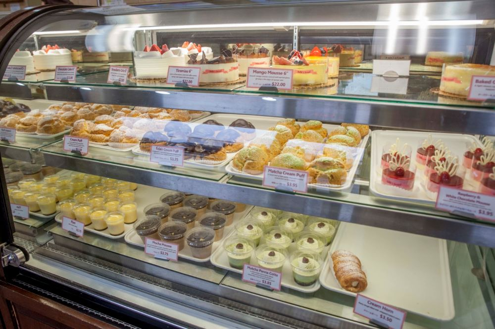
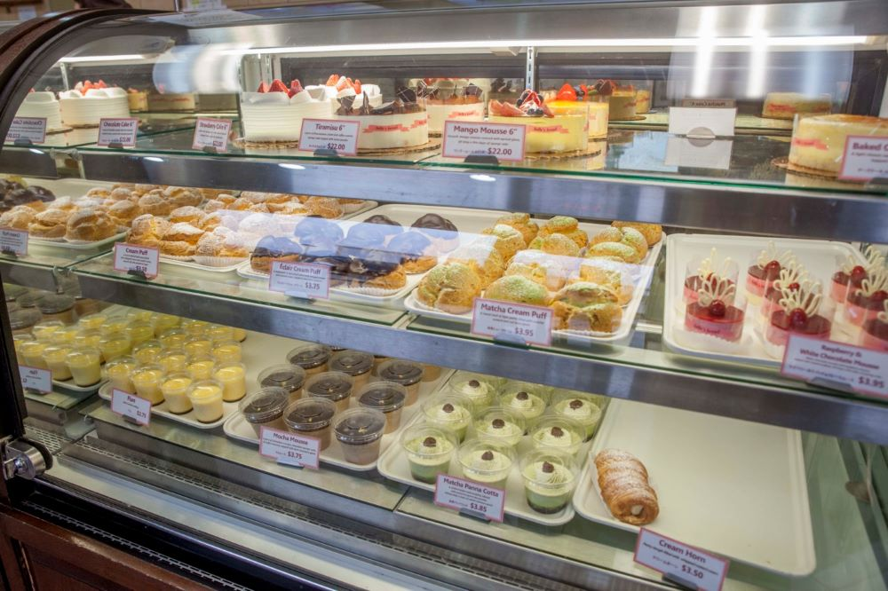

Japanese Market
 

The Japanese Market is a very cool place to visit in Columbus. The market is a combination of six unique shops. Akai Hana is a fancy sit down Japanese sushi place. You can order various traditional Japanese entrees as well as various sizes of sushi boats. Belles Bakery is a lovely traditional bakery/Cafe with some Japanese treats to indulge in as well. Some of their delicious items include, moose, croissants, sandwiches, cakes, coffees, ice creams and crepes. Tenseuke Market is the main shop in the market. At Tensuke Market you can buy all kinds of groceries from Japan. They have a wide range of Japanese goods from alcohol to candy to fish to mochi to ramen. J-Avenue is a giftshop where you can buy a variety of Japanese gifts for people. They have various anime merchandise and stuffed animals, along with many other things such as, incense, shampoos, lotions, hair cremes, bowls, plates, mugs, and more. Sushi Ten is a togo sushi place that provides made to order sushi. Tensuke Express is a ramen shop where you can order sit down or carry out ramen. All in all the market is a great place for people to visit for food and fun. It also works out to be a great spot for dates. Click Here to learn more about the Japanese Market!
Franklin Park Conservatory
.jpg)
.jpg)
Franklin Park Conservatory is a beautiful place to find lots of plant life. On the outside there are many gardens and even kids play areas that have been set up. On the inside there are beautiful glass sculptures and individual biomes for all kinds of different plants. The Himalyan Mountain biome has a variety of conifers, deciduous trees and shrubs, flowering plants and vines. The Rainforest biome is humid and houses many plants but is still just a portion of what you can find in the Rainforests of the world. In the desert biome you will find a wide variety of many different cacti. When you visit the desert biome you will be truly amazed by all the shapes, sizes and colors that cacti come in. In the Spring time there is a room dedicated to the butterflies. The butterfly room not only houses many different butterflies but it is also used to put on butterfly releasing event. The Conservatory is truly a wonderful place to visit in Columbus. Click Here to learn more.
Columbus Museum of Art
.jpg)
.jpg)
The Columbus Museum of Art hosts many different rooms dedicated to a wide variety of art pieces. They have everything from Contemporary to American to Photography and Impressionism. In addition to all the clasic exhibits, there are always changing exhibits to get fresh new things into the museum. The museum is also very kid friendly with many activites for kids. Every Sunday there is a group event for families to come in and make art all together. Click Here to learn more.
Easton
.jpg)
.jpg)
Easton is a very large shopping mall just outside of Columbus. There are a multitude of shops to go to while at Easton and it is easy to spend an entire day looking at everything. In addition to all the shopping Easton is also just a beautiful place to walk around. There are two different fountain areas and quite often there are different decerations for the time of the year. During the Christmas season it is especially beautiful because they go all out with a vast amount of lights and decor. Within the center of the mall there is a foodcourt and the centerpiece of it all is the AMC theaters. All in all Easton is a great place to shop or find a bite to eat. Click Here to learn more.
Metro Parks
.jpg)
.jpg)
The Metro Parks are an amazing getaway from the city. You can experiance the beauty of nature in these parks and still be close to the Columbus area. There are 20 natural Metro Parks available to frolick in. Each one has many different activities to choose from. You can simply walk the trails or go biking, horseback riding, fishing, disc golfing and more. One of the coolest attractions of the parks are the natural play areas. These areas are sectioned off for kids to enjoy and run wild in the forest. Many of the parks even have trails for pets so you can bring along man's best friend on your hikes as well. Click Here to learn more.